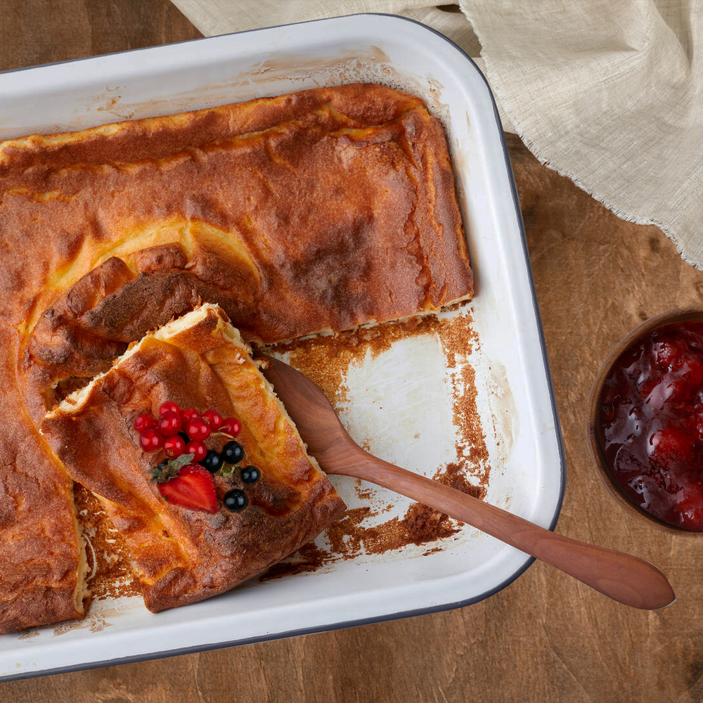

Pannukakku (Finnish oven pancake)

Pannukakku is a Finnish take on a pancake that is prepared in the oven.
A food blogger said it is something in between a pancake, crepe,
french toast and custard and that is enough to buy me in. I am excited to make it.
Ingredients
- 4 large eggs
- 3/4 teaspoon of salt
- 2 1/2 cups of whole milk
- 1 cup all-purpose flour
- 1/4 cup sugar
- 4 tablespoons of unsalted butter
Steps
- Preheat the oven to 200C. Place the butter in a baking dish and put in over to melt and be bubbly.
- Whisk together 4 eggs.
- Add in flour, milk, salt and sugar. Whisk until batter is smooth.
- Pour the batter slowly over the pan.
- Cook for 28-30 mins. It will be golden brown around edges and bubble up over the sides!
Recipe adapted from
TheRecipeCritic
Home